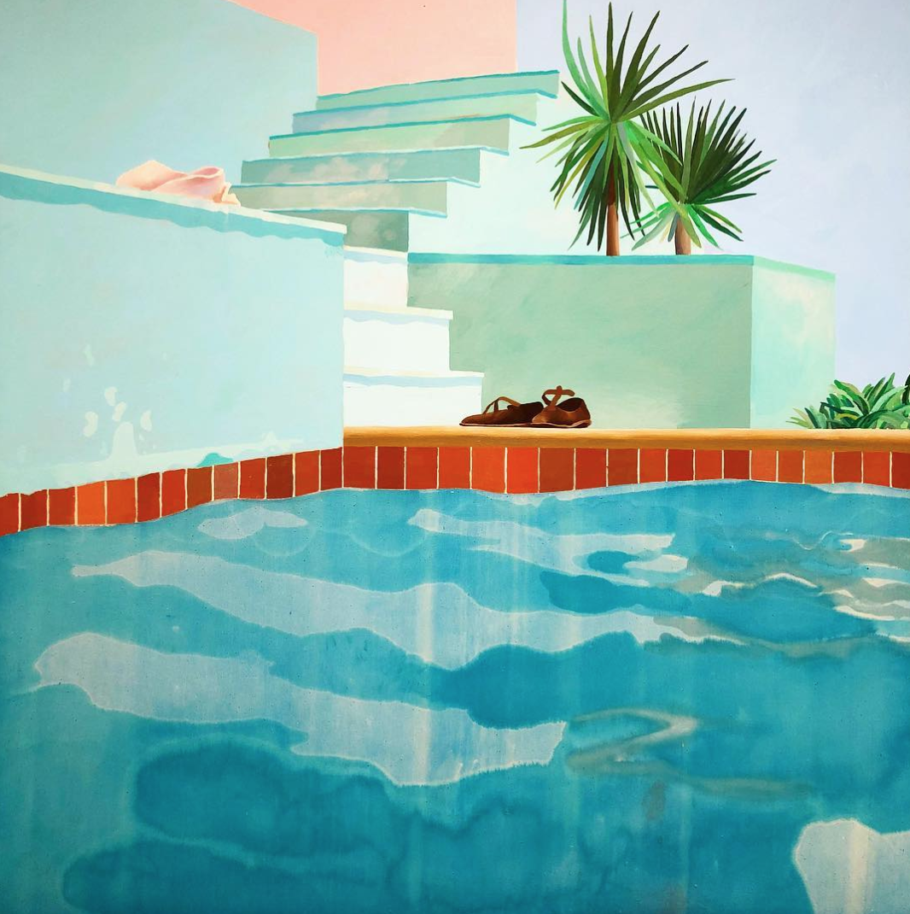

Prose
Twenty-Five Metres

Every Saturday that winter, Donna Marsh paid thirteen pounds fifty so that her daughter could fail to swim a length of Alderlea pool.
The viewing gallery ran the width of the shallow end, behind glass that wept with condensation. Radiators under the seats cooked chlorine into everybody's coats.
The other mothers arrived in gym leggings with coffees from the machine and sat in a row like a jury nobody had sworn in. They talked across each other about tutors and verruca socks and which secondaries had open evenings coming, and their laughter hit the pane and stayed on their side of it. Donna kept her coat zipped to the chin, her purse inside it, and took the end seat by the fire door where the draught came in.
Below, Stage Three had two roped lanes. Twelve children, foam woggles, and Lauren, nineteen years old in a red polo shirt with a whistle she never blew. Only pieces of her reached the gallery, the loud parts, the commands. Big arms. Kick to the wall. Blow your candles out.
Ruby's kick made the most white water in the lane and moved her the least. She held the woggle in a strangler's grip and travelled in slow arcs toward whichever wall had Lauren on it. When the others put their faces in, Ruby lifted her chin and paddled with her head up, eyes on the gallery, checking.
Lauren lowered them onto their backs one at a time, a hand under the shoulders, until they lay flat with their arms out. Ruby folded at the middle every time and came up snatching at the rail. "The ceiling’s moving," she said, loud enough for the gallery.
In March she managed ten metres, and Alderlea gave her a certificate and a cloth badge with a duckling on it. Donna sewed the badge to the corner of Ruby's towel at the kitchen table in small stitches of red thread, while Ruby read the certificate out twice and propped it against the sauce bottles.
A mother two seats along leaned over, in good boots and a dry-cleaned coat.
"You're Ruby's mum." She had her phone out. "Coniston. Are yours going?"
"Sixty a month, is it," Donna said. Below them, Lauren had the line at the wall, counting them off. "She's not stopped talking about it."
"Best week of their lives, my eldest said. They come back different."
* * *
Donna's own school ran one term of lessons at the sports centre, coach laid on by the council. Then the money ran out, and the year she turned eight, Union Street baths shut. Buddleia came up in the gutters, and the padlock on the ticket window grille stayed on.
After that it was Bridlington, one week each August, her mam at the tideline in an anorak with her arms folded, Donna and Lisa in the shallows in front of her. Stay where you can stand, she called, and her two girls stayed, and the sea went on without them. Donna was thirty-four and had not been in water past her waist in her life. The deep end held a darkness the shallow end did not, a blue that gave up on itself past the flags, and she kept her eyes off it.
In December the combi boiler packed in. Four hundred to fix it. The swimming money went, and the gas money after it. Six Saturdays went by without lessons. The swim school emailed to say they could hold Ruby's place until January. Donna paid what she owed in cash at the front desk, counting coins out of a freezer bag while the receptionist looked past her at the queue.
At February half term, the leisure centre ran family splash sessions, two adults and two children for a fiver. Ruby asked on the Monday and again on the Wednesday. Donna took her on the Friday and sat at the café tables on the wet side of the glass with a magazine she did not read, and Ruby stood at the barrier in her costume with her towel over her arm.
"Mum. Come in the little one." Ruby put a hand flat on her hip. "It's only up to here."
"I've not got a costume, love." Donna turned a page she had not read.
"Muuum. They sell them. Please. I don’t wanna be on my own."
"Watch you don't get cold," Donna said, and Ruby went in without her. The noise came off the water and filled that side of the building, and Donna sat in her coat at the edge with her feet in the wet.
Then one Saturday in April, with the small pool shut for a birthday party and the big pool quiet, Lauren took Ruby up the far lane, and Ruby swam it, all twenty-five metres. Lauren had a hand under her the whole way, correcting, steadying. At the wall Ruby came up with her mouth open, her eyes going to the gallery before anything else. Donna's hands stayed in her lap. Lauren's fingers had been under Ruby the whole length, and the man two seats along clapped anyway.
The certificate for the ten metres still stood against the sauce bottles at home. A length with fingers under it did not count. Ruby asked twice when the next certificate was coming, and Lauren said soon.
Afterwards Ruby came through the turnstile with her plait wringing dark, and it printed a dotted line across the foyer tiles, past the vending machines, all the way to the doors.
* * *
The letter came home after Easter in a plastic wallet. Five days at an outdoor education centre near Coniston. One hundred and eighty pounds, payable in three instalments on ParentPay. A kit list on yellow paper. Waterproof coat. Old trainers. A bin liner for wet kit. Sun cream. No phones. Tuck money to a maximum of fifteen pounds.
Donna set the instalments up on her phone at the bus stop, sixty pounds on the first of each month, and bought the trainers off the Tuesday market, and ironed name tapes into everything down to the socks.
The consent and medical form ran to two pages. Page one wanted inhalers, allergies, and a second emergency contact. Donna put Lisa. Page two held the declarations, a column of sentences with a square to tick beside each one.
Photographs for the school website. Minibus travel. Emergency treatment without her present. The third box down said, in bold, my child can swim twenty-five metres confidently and unaided. The space for the tick was smaller than a five-pence piece.
Ruby lobbied across the fish fingers all that week.
"Thursday's kayaking. Priya's mum's bought her a wetsuit and everything."
"And the ones who can't swim?"
Ruby lifted one shoulder and let it drop. "Shore games. With the Year Threes from the other school." She pushed a bean around the plate. "Ellis calls us the paddling group."
"You've done your ten metres though. Haven't you?"
"I did a length." Ruby put her fork down. "You were there."
* * *
Donna rang Alderlea on the Tuesday about a crash course, five days intensive, the kind that got them over the line. The girl on the desk read out dates. The intensives started in July and the trip left on the eighth of June.
The class WhatsApp filled that week with questions about travel sickness tablets and whether fifteen pounds covered the gift shop. Donna typed a question about the kayaks, about doubles, about instructors, and held her thumb over it, deleted it letter by letter, and put it on charge in the kitchen.
On the Thursday night she sat with the form under the kitchen light and a biro from the pot by the bread bin. Rain came down the window in threads. Ruby's reading folder lay open and abandoned on the sofa arm, and Ruby herself flat on the carpet in front of the telly doing front crawl in the air, counting strokes under her breath, turning her face to the side the way Lauren taught them.
Donna read the bold sentence three times. The office opened at eight. Ring Mrs Pointer, tell her Ruby could do ten metres, not a length, ask what they did with the ones who could not manage it and whether an instructor sat behind them in the doubles.
She knew how that call would sound, and who would take it, and what would go in the file next to Ruby's name. And Ruby standing on a jetty with the infants from the other school while Priya went out on the lake.
She ticked. The tick went in blue and overran the box. In the space at the bottom that asked for anything else we should know, she wrote nothing, and she signed her name under a line thanking her for helping keep every child safe on the water.
The form spent the weekend under the Whitby magnet. On Monday it went into the bookbag, and the magnet went back up on the door with nothing under it.
* * *
The night before the trip Donna packed the holdall on Ruby's bed while Ruby sat against the headboard in her pyjamas with the kit list, calling the items and ticking them as they went in. Waterproof coat. Old trainers. Bin liner. Sun cream.
"They give you wetsuits," Ruby said. Donna put the costume in last, folded flat, at the top where she would find it.
Donna plaited her hair for the morning, tight so it would last, and doubled the band at the end.
"Listen," she said, to the plait. "On that lake. You stay where you can stand up. Promise me."
Ruby laughed into her knees. "You sit down in a kayak, Mum. Nobody stands."
"You know what I mean."
"There’s instructors. You're not allowed out on your own anyway." Ruby turned round and looked at her, letting her off. "I'll bring you a present. What do you want?"
"You'll bring yourself back. That's the present."
* * *
The coach left from the car park at seven, into a June morning the colour of dishwater. The driver stacked holdalls in the belly of the coach, and the queue at the door smelled of sun cream and toothpaste. Miss Whittaker stood at the steps with a clipboard and a green ring binder under one arm, checking children through.
"Ruby Marsh." She found the name and drew a line through it. "On you get."
Ruby's chin came up. Donna's mouth opened. Ruby had hold of two of her fingers, and then Priya shrieked from the coach steps that she had got them the back seat, and the fingers were gone.
"She did a length at Alderlea," Donna said.
"Lovely," Miss Whittaker said to the list, and called the next name.
Ruby took the back seat with Priya and pressed her palm flat to the window. She mouthed something, and Donna nodded as if she had got it. Donna matched it from the kerb, until the coach indicated at the lights and took her daughter north.
Donna walked home the long way, past the Union Street baths. Buddleia had got a hold in the gutters and gone woody, thick as a wrist where the drainpipe fed it.
* * *
Mr Hedges first, who kept his window open an inch whatever the month and had the racing on, Kempton or Sandown.
She had worked out on the bus that she could pick up both weekend shifts with an empty flat. She had his sheets in a bundle and the trolley against the door when Marie came up the corridor with the office phone in her hand and shut Mr Hedges' door behind her.
"Donna," she said. "Phone."
They went down together, past the lift and the fire door. In the office, which smelled of toast, a man introduced himself twice.
He used the word incident, and he used the word water, and he named a hospital in Kendal, and then he said her daughter's full name, Ruby Anne Marsh, date of birth the eleventh of the eleventh, two thousand and fourteen, and the room went narrow and bright at the edges.
Lisa came for her within the hour and drove north into Cumbria with her sunglasses pushed up on her head and both hands on the wheel. The signs counted Kendal down the whole way, thirty miles, then eighteen, then eight.
Donna held the phone face up on her knees, four per cent, then three. She rang the school and got the answerphone reading out the term dates. She asked Lisa what he meant by water.
Somewhere past Lancaster the man rang Lisa's phone instead, and she listened and said right, right, and did not pass it over, and drove faster.
At the hospital, a nurse in blue walked them past the ward doors and the lifts, to a family room with two sofas, a low table, and a box of tissues set square in the middle of it. Donna stopped in the corridor. It took Lisa and the nurse together to hold her up.
* * *
The days after did not come one at a time. They came all at once. Lisa put plates down and took them away again. She cut the toast up small. It went cold on the arm of the chair, so she brought more at dinner. Ruby's duvet lay thrown back where she had left it on the Thursday morning. At three Donna was at the window in her coat. At four she was still there.
A family liaison officer named Kate sat at the kitchen table with a folder and went through what would happen and in what order. Lisa answered the door to casseroles, to cards, to the woman from two floors down who had never once spoken to them and could not stop apologising.
The school sent one card the size of a cereal box, forty names inside in felt tip, the whole of 6W. Alderlea sent another with the kids from Stage Three, and Lauren's name at the bottom. Priya had written that Ruby was her best friend since Reception, run out of room, and finished it up the side.
She went back to Fern Bank in the last week of June because the rent came out on the first and Lisa had gone home to her own kids. Marie paired her up on every shift and kept her out of the office. Nobody had told the residents anything. Mr Hedges asked after the little one. He had taken Donna's phone in both hands once, out at arm's length where he could see it, and told Donna she had her eyes.
"She's away with the school," Donna said. "The Lakes. Back Monday."
She tucked his corners tight and took the sheets down the corridor against her chest. For the length of that corridor Ruby was in the Lakes and coming back on Monday, and Donna walked it slowly.
Kate rang in the third week to say the coroner had released her and they could go ahead now. The undertaker asked what she should wear. Donna said her uniform, and then said no. The days before it went the way the days after had, other people making calls in the next room while she sat with her coat on.
The funeral was in there somewhere, in a church Ruby had been in twice, once for a christening and once for her dad, when she was three. Priya's mum held Donna's hands at the door, and neither of them said anything about the forms.
Her classmates came in uniform. Ruby was the only one of them not in it. Forty of them got up and sang, and her daughter's name was in a hymn she did not know, and it came again in the second verse. She stayed sitting, and nobody made her get up.
The cars went on to the crematorium after. The chapel took half of them, and the rest stood out on the tarmac in their coats. Two men brought her in at waist height in front of them, because a box that size does not reach from one shoulder to the next.
The curtain ran round on a motor. It took four seconds. Donna went down onto the kneeler, the wood of the pew against her forehead, an order of service on the floor by her face.
Lisa and a man she did not know got her up under the arms, and they walked the length of the aisle together while the whole chapel turned to watch, her feet finding the floor about half the time.
The horses stood outside in the sun with their plumes on and the glass carriage empty behind them. Ruby would have gone mad for all of it. She came out into it blinking. The day was warm, and everyone stood about not knowing whether to get in their cars yet. Afterwards, people kept telling her how much Ruby had loved her swimming.
Lisa had booked the back room at the Feathers for after. Donna asked the driver to take her home instead and sat in the flat in her coat while forty people ate pate sandwiches and drank on the cheap while her daughter waited her turn at the crematorium.
It was Lisa who stripped Ruby's bed in the end, and the duvet went in the machine with everything else. Donna kept one thing back from the wash, the towel with the duckling badge sewn to its corner. She folded it with the duckling on the outside and put it on the shelf.
In July the school office rang about Ruby's things. Donna collected the holdall and unpacked it on Ruby's bed. The waterproof on top, dried stiff at the cuffs. The market trainers with the laces still knotted. The bin liner still creased in its square, never used.
Under everything, the swimming costume, still folded flat the way she had packed it. And in the side pocket, a Viscount mint biscuit, a till receipt dated the Wednesday, and, flat against the lining, a postcard of the lake, unwritten. The biscuit and the card went into the drawer of Ruby's bedside table.
On the first, Alderlea Swim School took thirteen pounds fifty out of her account. Donna sat on the edge of the bath with the banking app open on the direct debit, and turned the phone face down on the lino. The next month the money went out again.
August came with a postcard, a cartoon frog in goggles. Splash, it said. Ruby is one star away from Stage Four. Book her next block today. Donna carried it to the kitchen and placed it behind the Whitby magnet, where the form had spent its weekend.
* * *
The inquest ran two days in October, in a carpeted room in Kendal with water jugs on the tables and a coat of arms above the coroner's chair. Kate sat on Donna's left and Lisa on her right, and across the room sat counsel for the school and for the centre, and behind them rows of people who each stood in turn and swore.
The coroner told Donna at the start that she should feel able to speak at any point, and that anything she wished to say about Ruby would be heard. Kate had brought a spiral notebook and a biro for her. Both days it went back in the bag with nothing in it.
The facts came out one at a time. The water was eleven degrees at the surface, and colder underneath. A squall came down off the fell mid-morning and crossed the water in under a minute. Ruby's kayak went over some two hundred metres out. The safety boat reached the upturned hull inside four minutes. Ruby was not with it.
A man from the water safety board sat with a buoyancy aid on the table in front of him and showed how a child can slip down through one in rough water. He explained what cold does in the first sixty seconds, the gasp the body takes, whether the head is above the surface or not. Counsel asked him how far. A good swimmer might make the hull. Anyone else, he said, a few metres. He was being generous.
Miss Whittaker gave her evidence on the first afternoon with the green ring binder squared in front of her. She confirmed the headcounts, the staff ratios, the paperwork. When she was asked whether any parent had raised a concern about the water, she turned the pages of the binder. The room listened to them turn. None had.
The centre's manager took the stand on the second morning. The non-swimmers had stayed in the sheltered bay that Thursday, he said, two to a boat, an instructor in each, because of the wind. The swimmers had gone out on the open water.
Consent had been given on the forms, he said, and that decided the groups. The school did the lists and sent them over. Counsel for the centre asked the coroner to note the exhibit, and the screen at the front of the room filled with Donna's tick, blue, a foot high, running out past the square.
It was her writing. She knew the shape of her own tick, the way it always overran, and she watched it a long time up there where the whole room could read it.
They read Alderlea's record out after that. She had passed ten metres in March. She was working towards twenty-five. The coroner recorded misadventure and offered the family his sincere condolences, thanked the witnesses, and rose.
People stood, gathered coats and moved along the rows, and Donna sat while they filed past her. The screen at the front was still on. Her tick was still on it. An usher came down and worked out how to turn it off, and it took him a while.
Anita had come on the second day because Priya's statement was read out. She had ticked the other box, and went past with her coat already over her arm. Donna stood by the lifts a while afterwards to give her the chance.
Lauren had been there both days on her own time, in a coat too big for her, at the end of a row. She was the one who came over, and she got hold of Donna's hand in both of hers. "She told me you were learning." Her sleeve went up to her face. "Sorry. I've no business being here." And she took the stairs rather than wait for the lift.
Nobody else in two days had said sorry to Donna, and the one who did had nothing to be sorry for.
* * *
The new school year started on a Wednesday. Donna rang Alderlea that morning before she could talk herself out of it, while Ruby's year went off to the secondaries in blazers a size too big.
"Do you do adults?" she said. "Beginners. Proper beginners."
The girl on the desk read out the times. Tuesday nights at seven, small group, shallow end to start.
She bought a costume off the Tuesday market, navy, guessing the size, and carried it home at the bottom of her bag. She got as far as the doors on the first Tuesday and came home again. She did that through September and October.
The week after the inquest she got through the doors. There were five of them in the shallow end, and Lauren at the side in her coat with the register.
The others had their reasons. Carol was learning so she could go in the pool with her grandkids at Center Parcs. A man wanted to take his wife's ashes out past Whitby harbour and could not make himself get in a boat to do it. A younger woman was off to Ibiza for a hen do and did not want to be the one holding the bags by the pool again. Donna said nothing, and Lauren didn’t ask, and wrote her name in the book under the rest.
When Donna came out of the changing rooms in the navy costume, Lauren looked at her a long moment across the water. Neither of them said the girl's name. The pool knocked at the gutters in the quiet, and Donna got in at the shallow end where she could stand.
Blow your candles out, Lauren said, the same words she gave the children, and Donna put her face into the chlorine and blew, came up, and did it again.
The lessons had a shape to them. A circle to bob in, the rail to kick from, widths when they were ready. Carol talked the whole hour. The man never came off the side. The Ibiza woman turned out to be a natural and made nothing of it.
Donna went every Tuesday. She came in the dark and left in the dark, past the gallery where the mothers sat on Saturdays, empty at night, the glass black over the water.
Her face went in easily enough. Her feet were the trouble. Carol had her strokes, the man had come off the rail, and the Ibiza woman was doing lengths. Donna kept one foot on the bottom the whole hour, every hour. Lauren let her and made no remark.
In December Lauren floated her. Two fingers under her spine, the ceiling lights above, the water holding the backs of her arms. Lauren stepped away without saying she had stepped away, and Donna lay on the surface a long ten seconds before she missed the fingers.
She swam a width in January, with a float held out in front, and she swam a width without it the week after, head up, chin dripping, in slow arcs toward whichever wall had Lauren on it.
In February she swam a length. Twenty-five metres. Her legs quit at the flags. The breath went out of her. She put her face down and pulled the last stretch on her arms alone, one and then the other, until her hand hit the wall at the deep end where the blue gives up on itself.
She held the wall with both hands and her breath came in pieces. Then she looked up the way Ruby used to, and there was no one behind the gallery glass at all.
Nobody clapped. Down the far end Lauren raised one hand off the water and put it back, and that was all, and it was enough.
In the changing rooms, Donna plaited her hair wet. She had let it grow since June, and she wore it up for the water, with a doubled band at the end.
She pushed through the turnstile with her bag on her shoulder, and the plait dripped behind her across the foyer, printing a dotted line along the tiles, past the vending machines, all the way to the doors, and out into the dark of the car park.
Twenty-five metres to the car, and she walked every one.
Ashley Mangtani is a slipstream writer whose work explores ecological and social collapse, and the roles people inhabit in moments of crisis. His work appears or is forthcoming in Smokelong Quarterly, Strange Horizons, Litro, Washington Square Review, Boudin, Heavy Feather Review, BULL, Expat Press, Thin Skin, HAWKEYE, Mobius, Third Wednesday, Rock Salt, Neon Dystopia, Apocalypse Confidential, and others. Read more at ashleymangtani.com